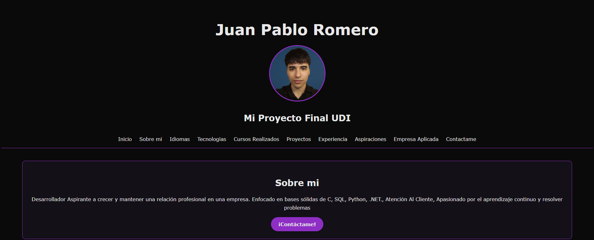
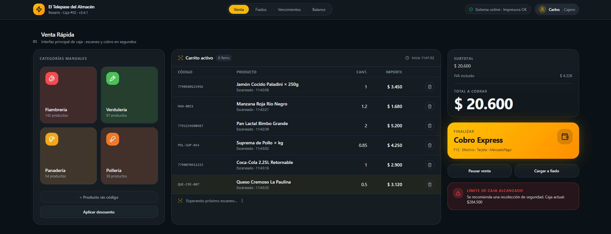
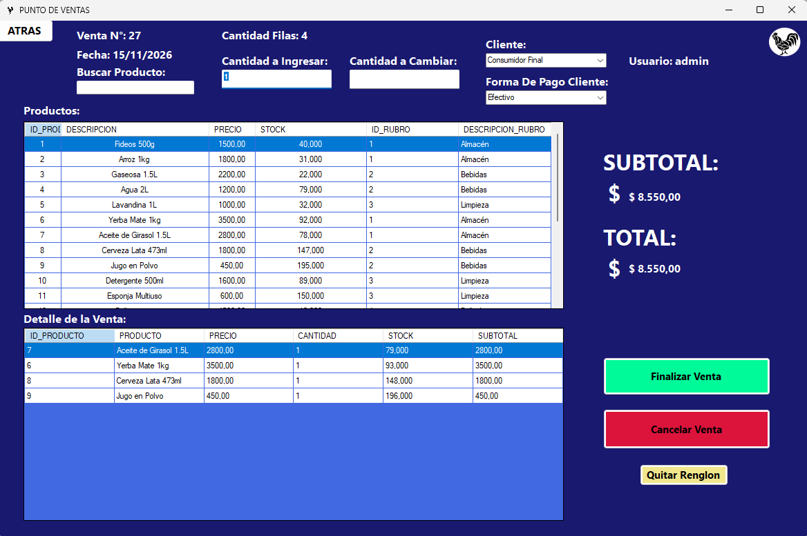
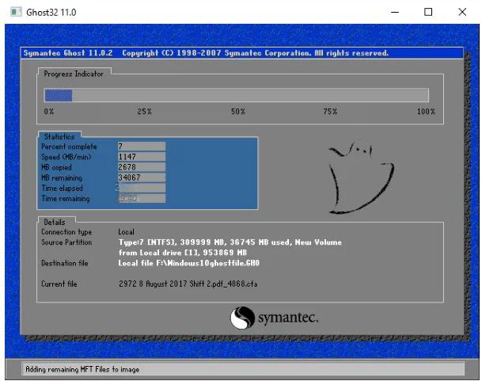
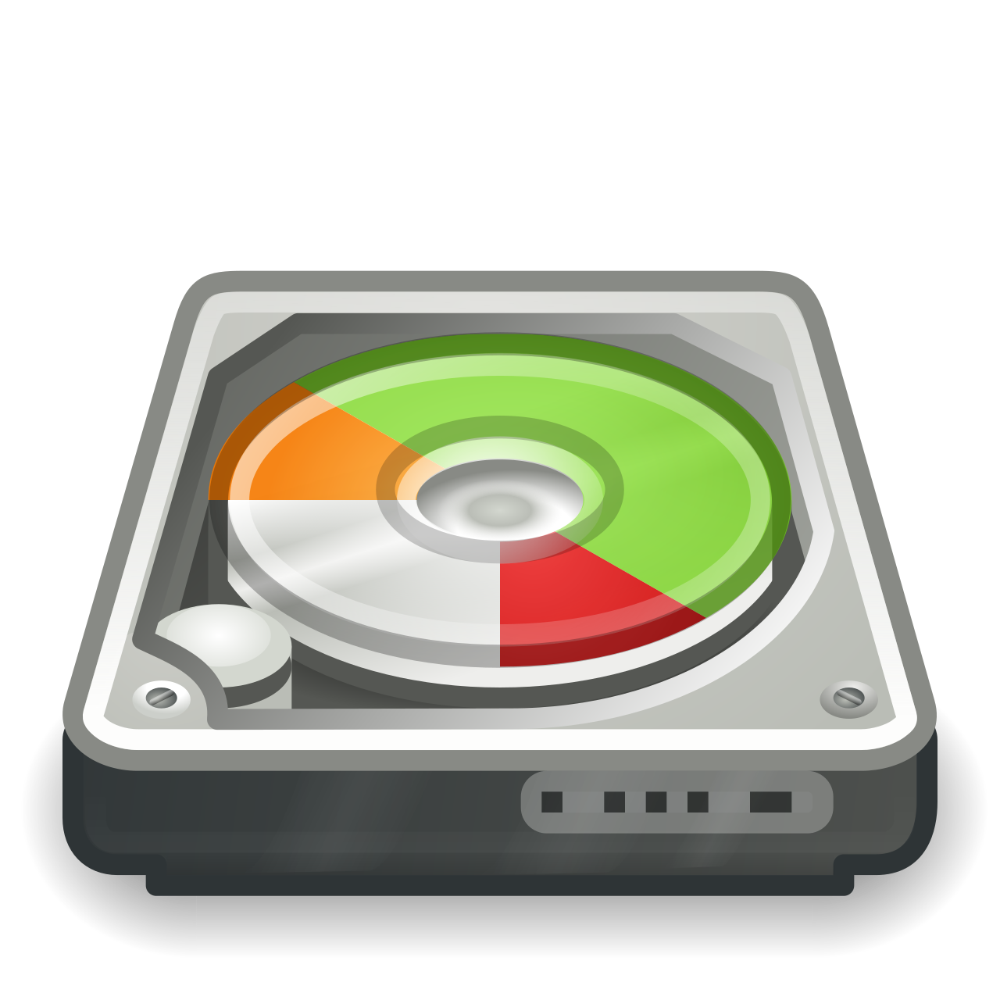
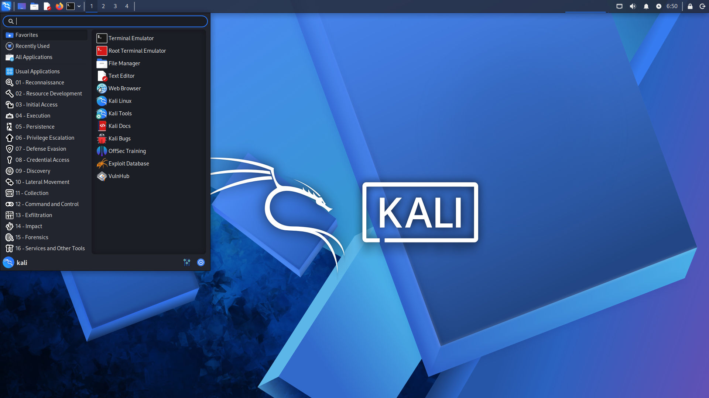
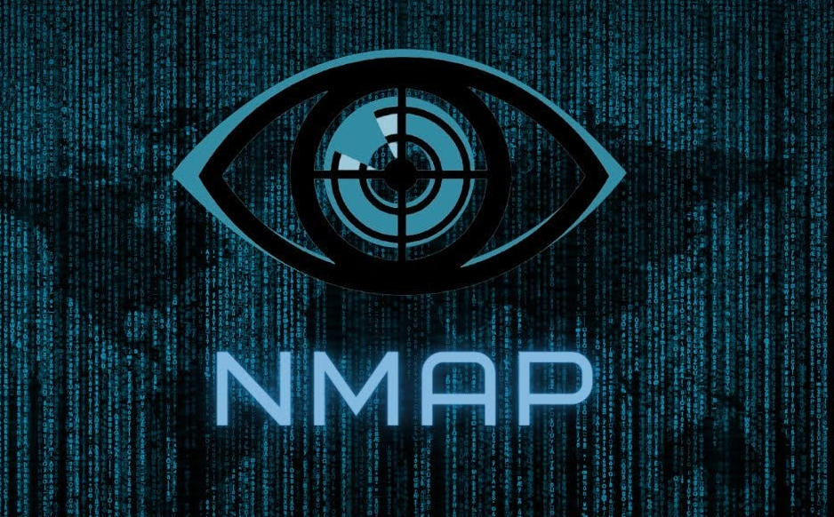
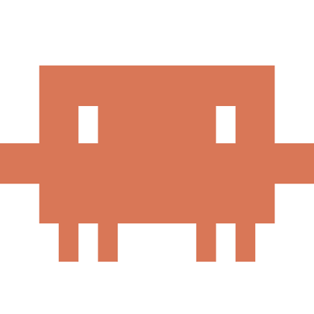
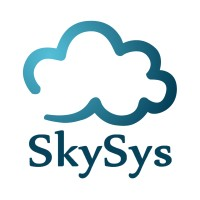

Desarrollador Aspirante a crecer y mantener una relación profesional
en una empresa. Actualmente cursando la Tecnicatura en Desarrollo de
Software en el Instituto Superior Zona Oeste (IZO), con experiencia
en soporte técnico, troubleshooting y atención al cliente. Busco
oportunidades para aplicar mis habilidades técnicas y de
comunicación en un entorno profesional. Apasionado por el
aprendizaje continuo y resolver problemas.
Habilidades blandas: Atención al cliente, Resolución de problemas,
Servicio rápido, Trabajo en equipo, Colaboración
Nivel 6 Aprobado B1 - Asociación de amigos de la escuela superior
de administración municipal (Reading B2 and Listening B2).
Portugues
Nivel A1 - Duolingo
Español
Nivel Nativo
Proyectos
Proyecto Final UDI II - Portfolio Personal

Portfolio Personal
Sitio web Sobre mi Portafolio/Personal desarrollado con HTML5,
CSS3 y JavaScript, alojado en GitHub Pages. Incluye estructura
accesible, control de versiones con Git Hub Desktop y despliegue
continuo.
Institución: Instituto Superior Zona Oeste (2026)
Tecnologías: HTML, CSS, JavaScript, Git Hub
Desktop, GitHub Pages, Git Hub, Visual Studio Code, Markdown,
Google Workspace
Documentacion y analisis de Pollo Abasto: Tu Almacen

Prototipo Visual
Pollo Abasto: Tu Almacén — documentación técnica: redacción de
Requisitos Funcionales, Reglas de Negocio, Casos de Uso, Diagramas
de Clases y Diccionarios de Datos, diseño de modelos relacionales
y Diagramas Entidad-Relación (DER)
Institución: Instituto Superior Zona Oeste (2026)
Tecnologías: Git Hub, Git Hub Desktop, Visual
Studio Code, Markdown, Google Workspace
Nota: este proyecto representa un negocio real el cual el
repositorio debe permanecer privado por datos sensibles
Trabajo Programación I - Pollo Abasto: Tu Almacén

Punto de Venta de Escritorio
Pollo Abasto: Tu Almacén — punto de venta pensado para un almacén,
desarrollado como aplicación de escritorio conectada y
sincronizada con una base de datos: venta rápida de productos,
control de stock, cobro y consulta del historial de operaciones
sobre SQL Server.
Diagnóstico de hardware, clonación de discos (dd, Ghost) y
recuperación de particiones (GParted, SystemRescue) en entornos
Linux/Windows - Análisis de tráfico: latencia y rendimiento en
redes IP empleando herramientas de línea de comandos (ping,
traceroute, iperf3). habilidades directamente aplicables a
troubleshooting de nivel Tier 1.
Institución: Instituto Superior Zona Oeste (2025)
Entorno Trabajado: Ubuntu


Hacking Ético - Laboratorios de Pentesting
Formación intensiva en Ethical Hacking cubriendo el ciclo completo
de pentesting (recon → explotación → post-explotación → escalada
de privilegios → reporting), con explotación práctica de CVEs
reales (Drupalgeddon2), vulnerabilidades web (SQLi, XSS, IDOR,
File Upload, SSTI) y técnicas de privilege escalation en Linux,
usando Nmap, Metasploit, sqlmap, Hydra y LinPEAS.
Institución: Instituto Superior Zona Oeste (2026)
Entornos Trabajados: Kali Linux, Windows, Virtual
Box


Workshop: Desarrollo con Agentes de IA
Workshop práctico de uso de inteligencia artificial generativa y
agentes de IA aplicados al desarrollo de software. Se abordan
herramientas basadas en modelos de lenguaje que pueden integrarse
en las distintas etapas del desarrollo: análisis de requisitos,
diseño, programacion, testing, debugging, documentacion y
mantenimiento.
Institución: Instituto Superior Zona Oeste (2026)
Agentes Trabajados: Claude Code, Cursor, Codex

Experiencia Laboral
Atención al Cliente y Gestión de Accesos
COTO C.I.C.S.A · 2025-2026
Validación de identidad, resolución de conflictos bajo presión y
manejo simultáneo de múltiples solicitudes. Base directa para tareas
de gestión de accesos de usuario (user access management).
Empresas y puestos a los que aspiro actualmente 2026
Puesto
Empresa
Acciones
Empresa a la cual aplique mi CV: Sky Systems, Inc. (SkySys)

SkySys es una empresa de consultoría tecnológica, ingeniería y
servicios de staffing, fundada en 2011. Actualmente cuenta con
entre 201 y 500 empleados y ayuda a clientes de Norteamérica a
formar equipos técnicos de forma local y global en más de 100
países.
La vacante a la que apliqué es para
Technical Support Specialist (Tier 1), un puesto
100% remoto para candidatos de toda Argentina, con jornada
completa (8 hs/día, lunes a viernes).
Por qué mi perfil encaja con este rol
Lo que pide SkySys
Lo que yo aporto
Troubleshooting y resolución de incidentes
Formación en diagnóstico de hardware, redes y Ethical Hacking
Soporte a plataformas SaaS y web
Base en HTML, CSS, JavaScript y desarrollo de software
Manejo de tickets (Jira Service Management)
Familiaridad con Jira Service Management
Comunicación vía Microsoft Teams y email (95%)
Inglés B1 certificado, lectura y escucha B2
Gestión de accesos de usuario y permisos
Experiencia en validación de identidad y atención al cliente
(COTO)
Aprendizaje rápido de sistemas nuevos
Estudiante activo en Tecnicatura de Desarrollo de Software
Responsabilidades Clave del Puesto
Brindar soporte técnico a aplicaciones SaaS, web e internas
desarrolladas a medida.
Resolver incidentes de configuración, permisos y acceso de
usuarios.
Gestionar y documentar solicitudes de soporte mediante Jira
Service Management.
Escalar problemas complejos a los equipos técnicos
correspondientes.
Comunicarse con usuarios principalmente por Microsoft Teams y
correo electrónico.
Contribuir a la documentación de soporte y artículos de base de
conocimiento.
Requisitos Solicitados
2+ años de experiencia en soporte técnico, help desk o áreas
afines.
Sólidas habilidades de resolución de problemas y diagnóstico.
Experiencia con plataformas de gestión de tickets (Jira,
ServiceNow, Zendesk o similares).
Buena comunicación escrita y verbal.
Capacidad de aprender nuevas herramientas y sistemas
rápidamente.
Requisitos Deseables (Preferred)
Experiencia con WordPress u otro sistema de gestión de
contenidos (CMS).
Conocimientos de administración de accesos y permisos de
usuario.
Familiaridad con Jira Service Management.
Soporte a plataformas de contenido web o publicaciones
digitales.
Perfil Ideal según SkySys
La empresa busca un perfil con curiosidad técnica y orientación al
servicio, que tenga una base sólida en soporte al usuario y
troubleshooting, y esté buscando crecer y expandir sus habilidades
técnicas. Aclaran explícitamente que no hace falta venir de un rol
Tier 2 tradicional — perfiles de Service Desk, Application Support
o soporte SaaS con buen criterio y comunicación también son
bienvenidos.
Nota: este proyecto es un trabajo académico de adaptación de CV
(UDI II). No representa una afiliación real con Sky Systems,
Inc.